Romane
Vom Manuskript zum veröffentlichten Roman
Romane entstehen zunächst abseits der Öffentlichkeit. Am Anfang stehen eine Idee, Figuren und eine Geschichte, die sich erst während des Schreibens zu einem Manuskript formen. Mit der Veröffentlichung beginnt für ein Buch jedoch ein zweites Leben: Es erhält ein Gesicht, begegnet seinen Leserinnen und Lesern und findet seinen Weg in Buchhandlungen, auf Buchmessen, zu Lesungen und in die Medien.
Die hier vorgestellten Romane von Bernd Hesse sind zu unterschiedlichen Zeiten und unter unterschiedlichen Bedingungen entstanden. Die Abbildungen zeigen deshalb nicht allein Buchcover. Sie dokumentieren zugleich etwas von der Geschichte der Bücher: verschiedene Ausgaben und Formate, Verlagswerbung und Presseberichte ebenso wie Eindrücke von der Leipziger Buchmesse.
So entsteht kein vollständiges Verzeichnis im Sinne eines Katalogs, sondern ein Einblick in die Wege, die ein Roman nach seiner Entstehung nehmen kann – vom geschriebenen Text bis zur Begegnung mit seinem Publikum.
Rubel, Rotlicht und Raketenwerfer
Kriminalroman um den Privatdetektiv Sven Rübel
Der lange Weg zu Sven Rübel
Die Beschäftigung Bernd Hesses mit dem Kriminalroman begann lange vor seiner ersten größeren Romanveröffentlichung. Bereits seit Ende der 1990er Jahre entstanden neben anderen literarischen Arbeiten verschiedene Arbeiten in diesem Genre. Dazu gehörten mehrere unveröffentlichte Kriminalromane um den Kriminalkommissar Grauner, darunter Wenn der Fluss zufriert, ebenso wie der ebenfalls unveröffentlichte Roman Kein Sterbenswörtchen. Nicht jedes Manuskript findet seinen Weg zu einem Verlag – manches bleibt eine wichtige Station auf dem Weg zu späteren Büchern.
Über Jahre hinweg arbeitete Hesse immer wieder an neuen Stoffen und Formen des Kriminalromans. Dabei ging es zunehmend auch um die Frage, wie sich Erfahrungen und Beobachtungen aus der beruflichen Welt eines Strafverteidigers literarisch nutzen lassen, ohne daraus bloße Fallberichte zu machen. Der Kriminalroman eröffnete die Möglichkeit, Realität und Fiktion miteinander zu verbinden und zugleich Figuren zu schaffen, die ihren eigenen Gesetzen folgen.
Eine solche Figur wurde schließlich Sven Rübel. Mit ihm entstand ein Privatdetektiv, der wenig mit dem souveränen Ermittler des klassischen Kriminalromans gemein hat. Rübel ist unkonventionell, hält sich nur mäßig an Regeln und ist auch beruflich keineswegs immer vom Erfolg verwöhnt. Er gerät in Situationen, die er nicht vollständig beherrscht, und seine eigenen Schwächen bleiben dem Leser nicht verborgen. Gerade darin liegt jedoch ein wesentlicher Teil seines Charmes: Bei allem Chaos ist Rübel eine sympathische Figur, die das Herz am rechten Fleck hat.
Der erste Rübel-Roman
Mit Sven Rübel war schließlich die Figur gefunden, um die herum sich der erste veröffentlichte Kriminalroman entwickeln konnte. Das Manuskript von Rubel, Rotlicht und Raketenwerfer gelangte zum Gmeiner-Verlag. Der Verlag entschied sich zunächst für einen vorsichtigen Weg und veröffentlichte den Roman zuerst als E-Book.
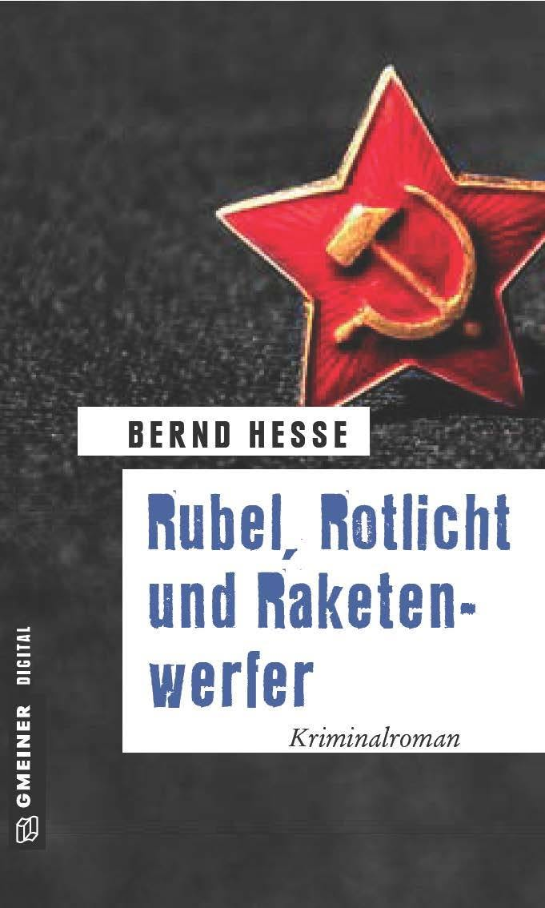
Der Titel selbst darf dabei durchaus als programmatisch verstanden werden. Rubel, Rotlicht und Raketenwerfer war eine Idee des Verlages, der Bernd Hesse gerne zustimmte. Schon die drei Begriffe signalisieren, dass sich dieser Kriminalroman bei aller Ernsthaftigkeit seines Stoffes nicht ohne Augenzwinkern lesen lassen will. Dieser Ton gehört auch zu Sven Rübel: Die Welt, in die er gerät, kann gefährlich und mitunter düster sein – die Art, wie er sich in ihr bewegt, bewahrt jedoch immer wieder Raum für Ironie und Komik.
Vom E-Book zum gedruckten Roman
Der zunächst eingeschlagene Weg über das E-Book erwies sich als erfolgreich. Der Zuspruch zu dem Roman führte dazu, dass der Gmeiner-Verlag schließlich auch einer gedruckten Ausgabe zustimmte. Damit begann für Rubel, Rotlicht und Raketenwerfer eine zweite Phase: Aus der zunächst ausschließlich digitalen Veröffentlichung wurde ein Buch, das nun auch sichtbar in Buchhandlungen, im Verlagsprogramm und schließlich auf einer der großen deutschen Buchmessen präsent war.
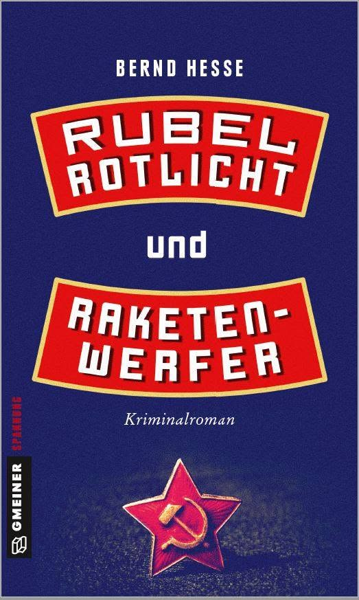
Auch im Verlagsprogramm wurde der besondere Ton des Romans herausgestellt.
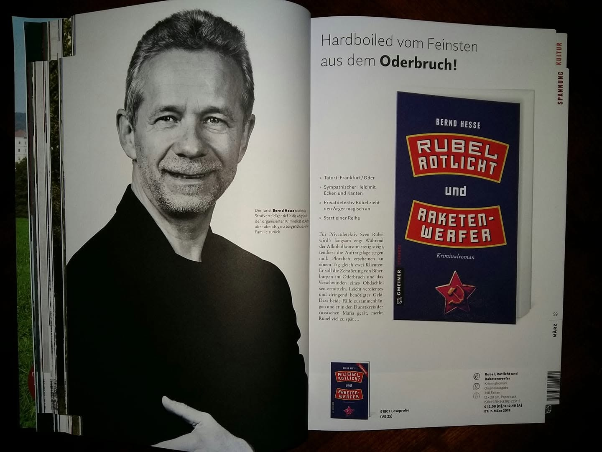
„Releaseparty mit Wodka & Wasser“
Für die Präsentation der gedruckten Ausgabe wählte der Verlag einen Rahmen, der zu Sven Rübel und zum augenzwinkernden Ton des Romans passte. Auf der Leipziger Buchmesse wurde zu einer „Releaseparty mit Wodka & Wasser“ eingeladen. Eigene Plakate kündigten die Veranstaltung an. Bernd Hesse stellte dort den Roman einem Messepublikum vor und las aus dem Buch.
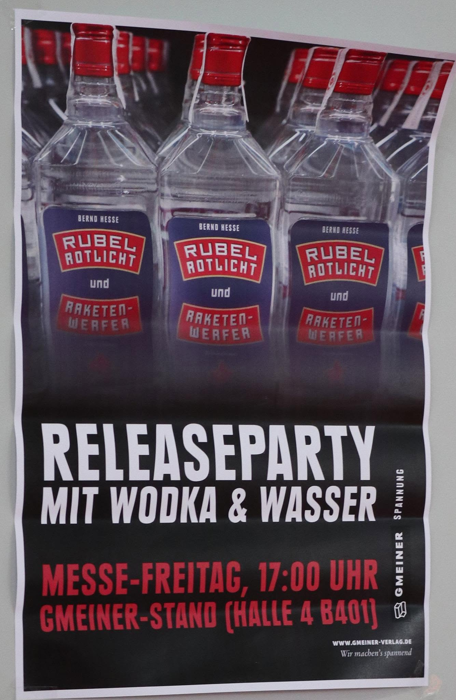
Die Buchmesse wurde damit zu einem besonderen Moment in der Geschichte des Romans. Aus einem Manuskript und einer zunächst vorsichtig erprobten E-Book-Veröffentlichung war ein gedrucktes Buch geworden, das nun vor einem großen Messepublikum präsentiert wurde.
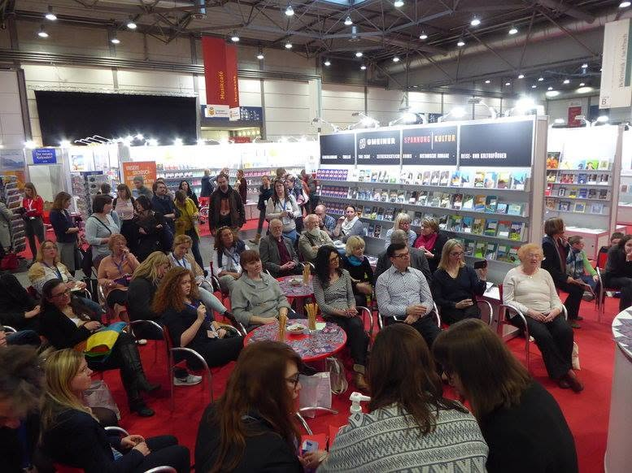
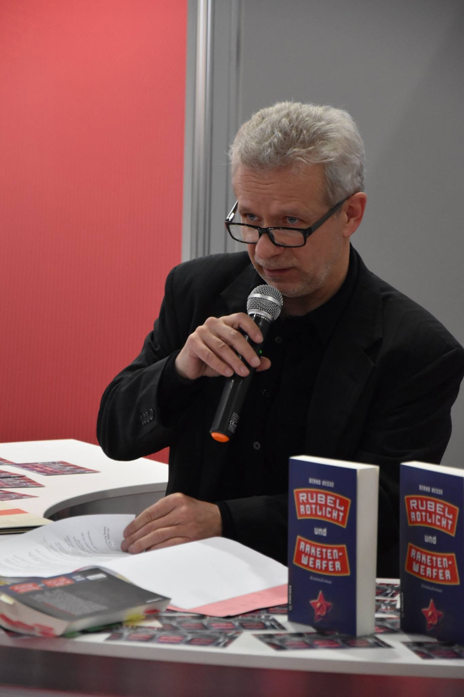
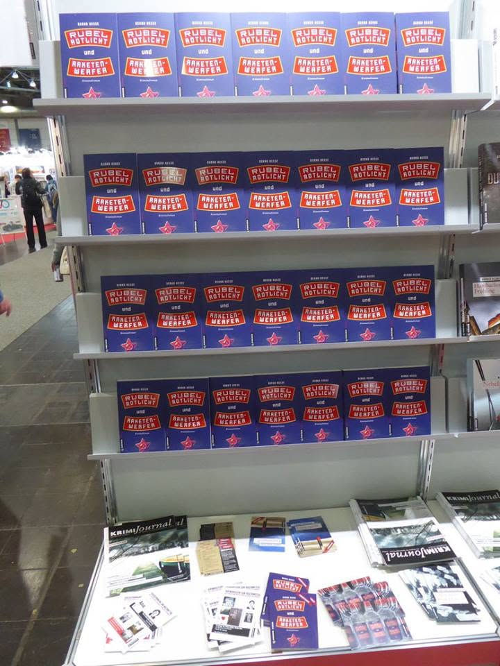
Ein Roman wird sichtbar
Die Veröffentlichung wurde auch außerhalb der Buchmesse begleitet. Plakate warben für den Roman, hinzu kamen Presseberichte und eine digitale Großflächenanzeige in Frankfurt (Oder). Gerade diese zeitgenössischen Zeugnisse gehören zur Geschichte des Buches: Sie zeigen, wie aus dem zunächst nur als E-Book verfügbaren Roman eine Veröffentlichung wurde, die schließlich auch im öffentlichen Raum sichtbar war.
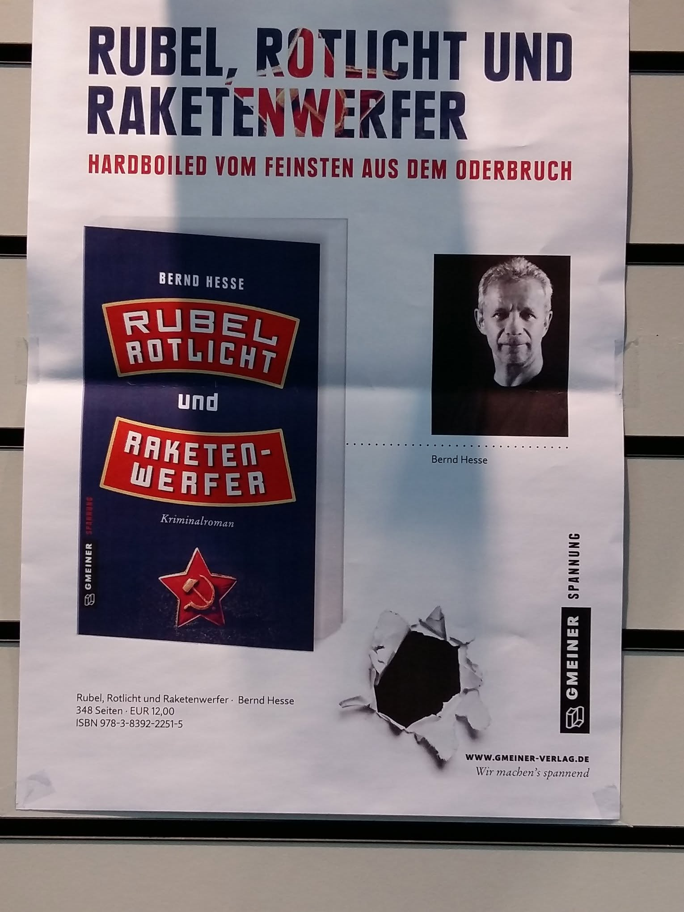
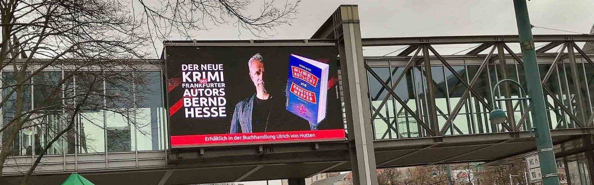
In der Presse
Auch die Presse begleitete den Weg des Buches und berichtete über den Roman, seinen Autor und die Präsentation der gedruckten Ausgabe.
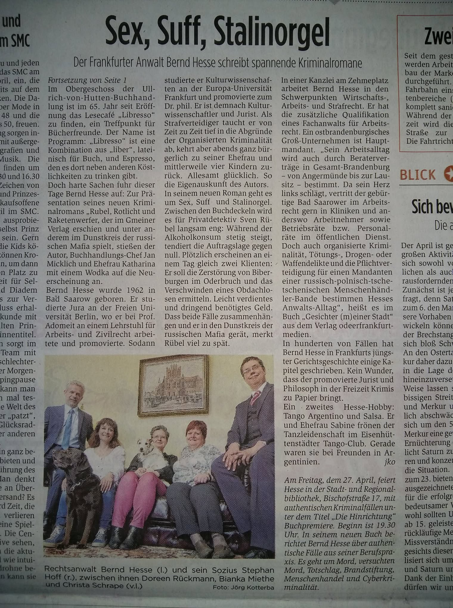

Vom Roman zum Hörbuch
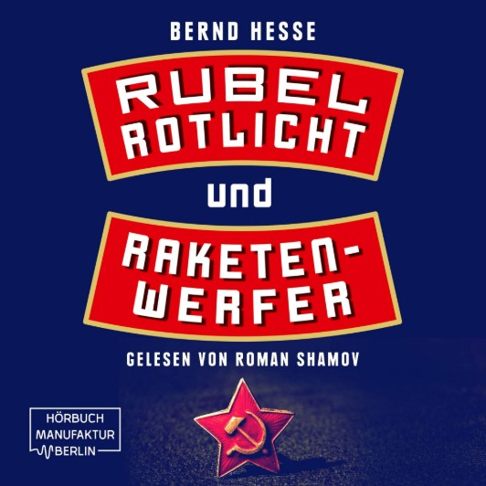
Mit der Taschenbuchausgabe und der Präsentation auf der Leipziger Buchmesse war die Geschichte von Rubel, Rotlicht und Raketenwerfer noch nicht beendet. Einige Jahre später erhielt Sven Rübel auch eine Stimme. Die Hörbuchmanufaktur Berlin produzierte den Roman als ungekürztes Hörbuch. Sprecher war der Schauspieler und Hörbuchsprecher Roman Shamov.
Aus der zunächst beruflichen Zusammenarbeit zwischen Autor und Sprecher entwickelte sich im Laufe der Zeit eine persönliche Freundschaft. Damit blieb es nicht bei diesem einen gemeinsamen Projekt. Bernd Hesse und Roman Shamov standen später erneut gemeinsam vor dem Mikrofon und produzierten eine Reihe zu authentischen Kriminalfällen. Dabei trafen zwei unterschiedliche Perspektiven aufeinander: die des professionellen Sprechers und Schauspielers und die des Strafverteidigers und Autors, der aus seiner beruflichen Praxis und von realen Fällen berichten konnte.
Für Rubel, Rotlicht und Raketenwerfer schloss sich damit zugleich ein Kreis. Was mit langjährigen literarischen Arbeiten im Genre des Kriminalromans begonnen hatte, führte über die Entwicklung der Figur Sven Rübel und die zunächst vorsichtige Veröffentlichung als E-Book zum gedruckten Roman, auf die Leipziger Buchmesse und schließlich zum Hörbuch.
Sven Rübel sollte keine einmalige Erscheinung bleiben. Der unkonventionelle Privatdetektiv kehrte in einem weiteren Roman zurück – und damit begann das nächste Kapitel seiner Geschichte.
Wodka, Weiber, Wasserleiche
Privatdetektiv Sven Rübels zweiter Fall
Das nächste Kapitel ließ nicht lange auf sich warten. Mit Wodka, Weiber, Wasserleiche kehrte der deutsch-polnische Privatdetektiv Sven Rübel 2018 im Gmeiner-Verlag zurück. Wieder führt ihn sein Weg durch das Oderbruch und den deutsch-polnischen Grenzraum – und wieder ermittelt er mit seinen ganz eigenen, nicht immer konventionellen Methoden.
Diesmal beginnt alles mit einer Frauenleiche, die ein Angler aus der Oder fischt. Zugleich verschwindet eine Prostituierte, ein scheinbar unbescholtener Bürger wird schwer misshandelt, und auch privat bleibt Rübel von Verwicklungen nicht verschont. Seine Freundin Eileen möchte seine Mutter kennenlernen, während sein neuer Partner, der ehemalige Polizist Frank Fechner, mit seiner ausgeprägten Korrektheit einen denkbaren Gegenpol zu Rübels Arbeitsweise bildet.
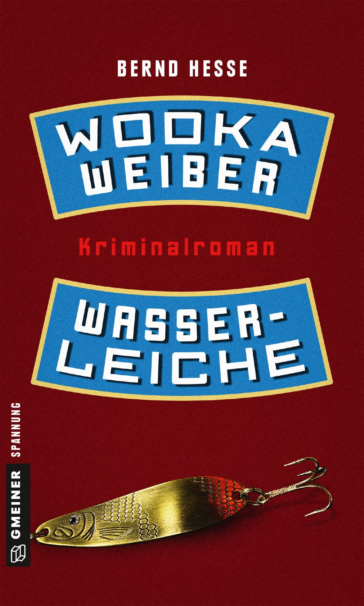
Wodka, Weiber, Wasserleiche – Privatdetektiv Sven Rübels zweiter Fall, Gmeiner-Verlag 2018.
Ein neuer Fall für Sven Rübel
Der zweite Rübel-Roman wurde vom Gmeiner-Verlag in seinem Programm vorgestellt. Zugleich kündigte der Verlag die zahlreichen Lesungen an, mit denen Bernd Hesse den neuen Roman seinem Publikum vorstellte. So setzte sich der Weg Sven Rübels nicht nur zwischen zwei Buchdeckeln, sondern auch auf zahlreichen Lesebühnen fort.
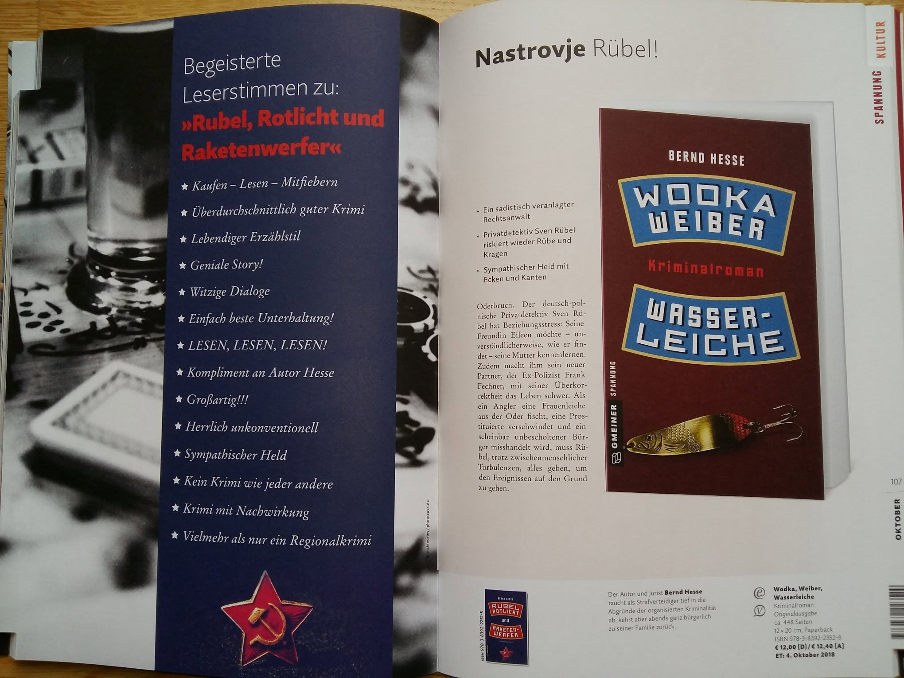
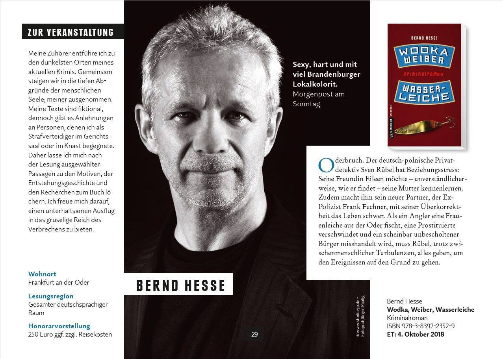
Buchpremiere in Frankfurt (Oder)
Seine Buchpremiere erlebte Wodka, Weiber, Wasserleiche in der Buchhandlung Ulrich von Hutten in Frankfurt (Oder). Damit wurde Sven Rübels zweiter Fall dort erstmals öffentlich vorgestellt, wo die Landschaft und das deutsch-polnische Grenzgebiet, in denen der Roman spielt, unmittelbar vor der Haustür liegen.
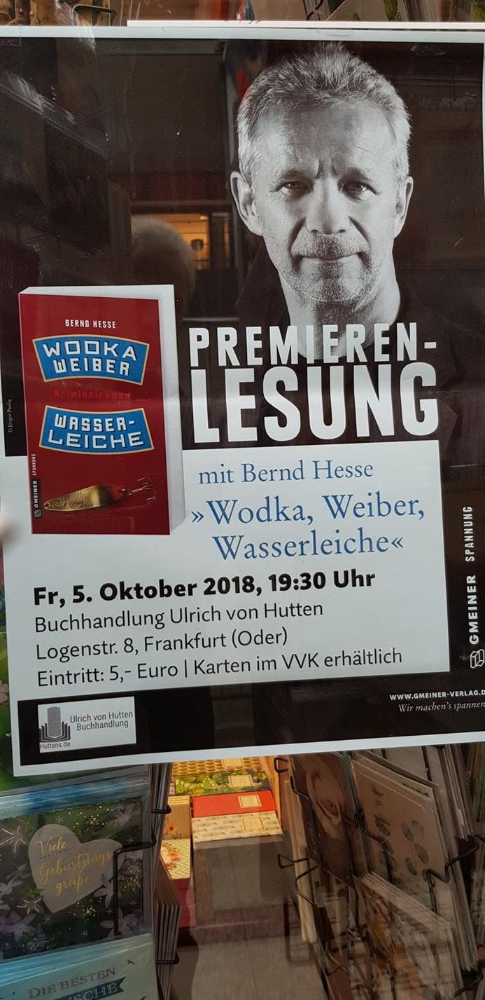
Buchpremiere von Wodka, Weiber, Wasserleiche in der Buchhandlung Ulrich von Hutten in Frankfurt (Oder).
Unterwegs mit Sven Rübel
Der Buchpremiere folgten zahlreiche Lesungen an ganz unterschiedlichen Orten. Zwei Stationen stehen hier beispielhaft für diese Lesereise: eine Lesung in Freiberg in Sachsen und eine weitere im Regionalmuseum Oberhavel in Oranienburg. Bei diesen Veranstaltungen begegnete Sven Rübel seinem Publikum außerhalb der Romanseiten – gelesen und vorgestellt von seinem Autor.
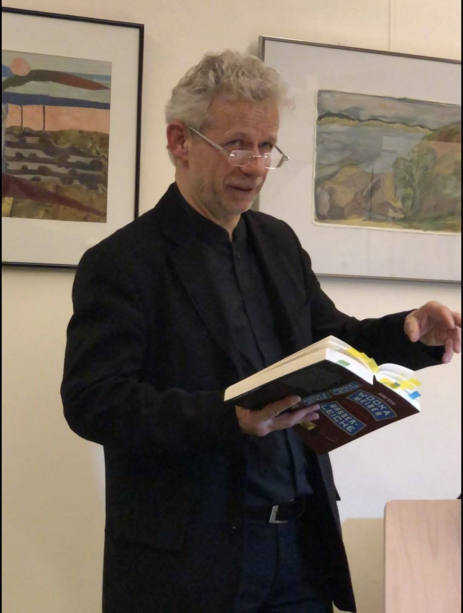
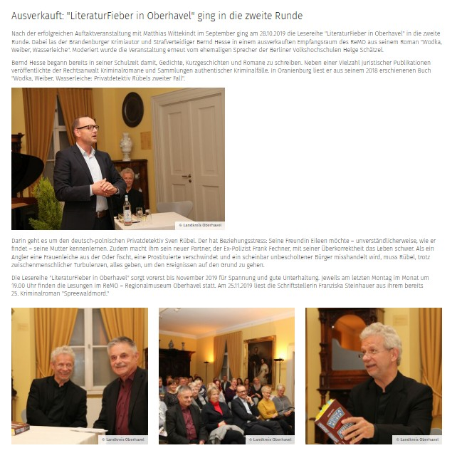
Der Roman in der Öffentlichkeit
Die Veröffentlichung wurde auch von Werbung und Presseberichterstattung begleitet. In Frankfurt (Oder) war Wodka, Weiber, Wasserleiche weithin sichtbar auf einer digitalen Werbetafel am Oderturm präsent. Auch die Presse berichtete über den neuen Roman, seine Entstehung und die Lesungen.
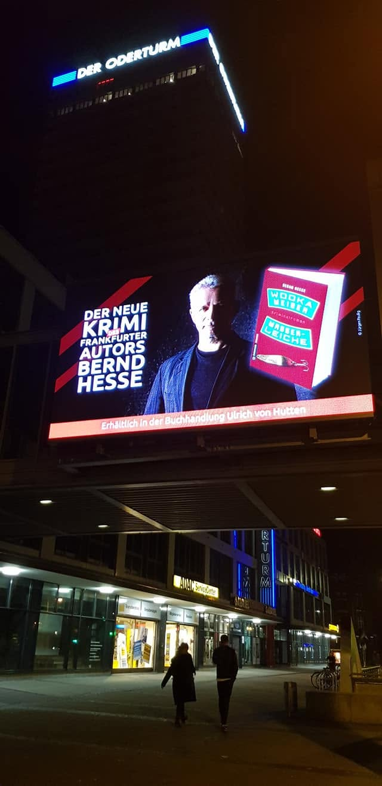
Wodka, Weiber, Wasserleiche auf der digitalen Werbetafel am Oderturm in Frankfurt (Oder).
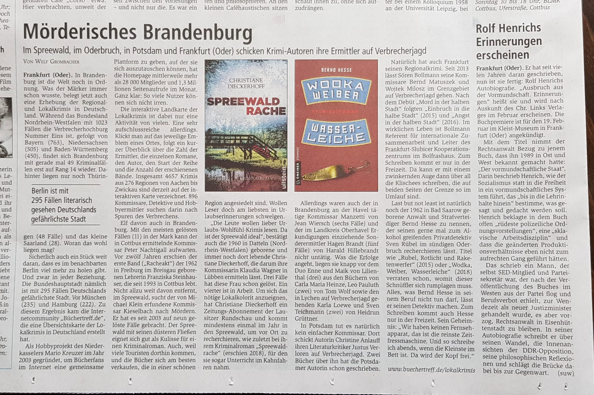
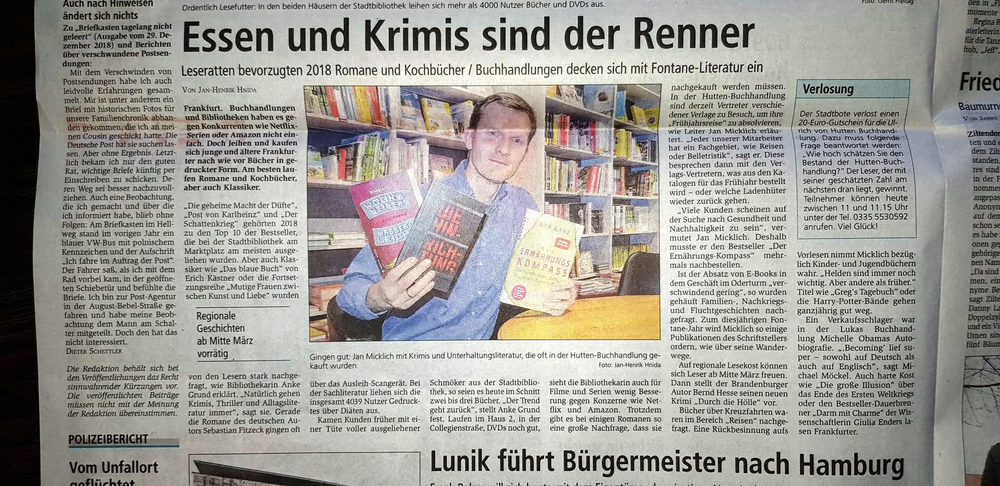
Und schließlich: Sven Rübel zum Hören
Wie schon der erste Fall fand schließlich auch Wodka, Weiber, Wasserleiche seinen Weg vom gedruckten Buch zum Hörbuch. Roman Shamov lieh Sven Rübel und den anderen Figuren seine Stimme. Mit seiner wunderbar sonoren Stimme verleiht er dem zweiten Rübel-Fall und seiner Welt an der Oder noch einmal einen ganz eigenen Klang.
Das Hörbuch zu Wodka, Weiber, Wasserleiche, gesprochen von Roman Shamov.